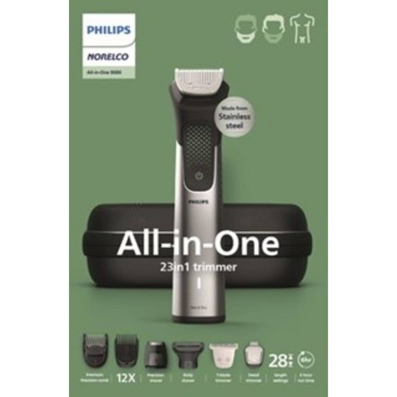

Foil vs Rotary Shavers 2026
— Best Picks for Every Shaving Style
The foil vs rotary debate has a real answer — it just depends on your beard and your face. Foil shavers use oscillating blades behind a thin metal screen to cut hair precisely at skin level, making them ideal for straight beards, flat jaw lines, and daily shavers who want the closest possible finish. Rotary shavers use three or four spinning heads that flex and pivot to follow facial contours, making them the better choice for curved jaw structures, longer stubble, and anyone who shaves every 2–3 days. We tested the best of each type — from a $79 budget foil to the $299 flagship rotary — so you can buy with confidence.
⚡ Quick Picks
Panasonic Arc5 ES-LV97
Best Foil Shaver · $249 · 5-blade foil, closest dry shave tested
Philips Norelco 9900 S9985
Best Rotary Shaver · $299 · 10-direction flex, best for contoured faces
Braun Series 9 Pro+
Best All-Around Foil · $249 · Wet/dry, cleaning station included
Andis ProFoil Lithium
Best Budget Foil · $79 · Barber-grade titanium foil at entry price
Panasonic Arc5 ES-LV97

The Panasonic Arc5 ES-LV97 is the closest-shaving electric razor we've tested — foil or rotary. Five ultra-sharp 30-degree nanotech blades oscillate at 70,000 cuts per minute, which is noticeably faster than Braun's Series 9 Pro+ and virtually eliminates the need for multiple passes. The Arc5 also has a built-in shaving sensor that automatically adjusts motor torque based on beard density, so thick patches and sparse areas both get optimized cutting power. Wet/dry IPX7 waterproofing means it works with gel in the shower or dry straight from the cabinet.
Pros
- Closest shave of any electric tested
- Auto-adjusting shaving sensor
- Full wet/dry capability with gel
Cons
- Cleaning station sold separately
- Replacement blades cost ~$50
Philips Norelco 9900 S9985

The Philips Norelco 9900 is the pinnacle of rotary shaving. Its four SkinIQ cutting heads flex in 10 directions independently — more than any previous Norelco model — so every curve of the jaw, neck, and chin is reached without pressing or repositioning. The built-in SmartClick cleaning port charges the shaver and automatically cleans the heads in under a minute, which keeps performance consistent over time. For men who shave every 2–3 days or have a longer beard pattern, the 9900 handles stubble that would snag a foil shaver, and it does it without skin redness.
Pros
- Best rotary for contoured jaw and neck
- Handles 3-day stubble without snagging
- Cleaning station included in box
Cons
- Premium price at $299
- Rotary heads less precise on upper lip
Braun Series 9 Pro+

The Braun Series 9 Pro+ offers the best overall package of any foil shaver on the market when you factor in the included 5-action cleaning station. Its ProLift Blade lifts and cuts flat-lying hairs that most foil shavers miss entirely, and the SkinComfort technology reduces foil-to-skin friction dramatically — making it the top choice for sensitive skin among foil shavers. The cleaning station automatically cleans, lubricates, and dries the shaver so blades stay sharp for longer. If you shave daily and want premium foil performance with minimal maintenance, the Series 9 Pro+ is the easiest all-in recommendation.
Pros
- Best foil shaver for sensitive skin
- 5-action cleaning station in the box
- ProLift blade catches flat-lying hairs
Cons
- Cleaning cartridges are a recurring cost
- Slightly slower than Panasonic Arc5
Andis ProFoil Lithium Foil Shaver

Andis has been equipping professional barbers for decades, and the ProFoil Lithium brings that pedigree to a $79 consumer tool. The titanium hypoallergenic foil delivers a smooth, close shave that punches well above its price point, and it excels at the niche the premium brands overlook: head shaving and detail cleanup around beard lines. At 80 minutes of cordless runtime per charge, it handles a full week of shaving without needing a recharge. It won't match the Arc5 or Series 9 for full-face daily use, but as a budget foil or a travel shaver, it's unbeaten.
Pros
- Professional barber-grade titanium foil
- 80 min battery — enough for a full week
- Exceptional for head shaving at $79
Cons
- Single-foil — slower on full-face shaving
- No wet/dry or cleaning station